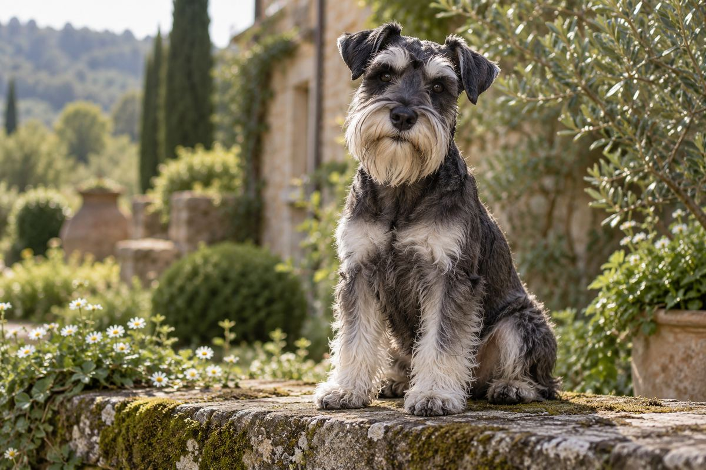

先是一位认真工作的农场伙伴
迷你雪纳瑞在德国发展形成。较小的标准雪纳瑞与其他小型犬参与了早期培育，目标是一只灵活的捕鼠犬。[1]
农场 · 捕鼠 · 小型化
来自德国的小绅士01 / 历史足迹
胡须背后，有农场生活的忙碌，
也有跨越大西洋的旅程。
迷你雪纳瑞在德国发展形成。较小的标准雪纳瑞与其他小型犬参与了早期培育，目标是一只灵活的捕鼠犬。[1]
农场 · 捕鼠 · 小型化AKC 的历史文章记载，德国最早登记的迷你雪纳瑞是一只黑色母犬 Findel，出生于 1888 年。早期个体与今天的外形并不完全相同。[1]
据美国迷你雪纳瑞俱乐部的记录，迷你雪纳瑞早在 1899 年就已作为独立犬种参展。这是它走向明确品种身份的重要节点。[2]
品种身份逐步确立1920 年代，进口犬只推动了迷你雪纳瑞在美国的发展。俱乐部资料将美国本土繁育的起点记为 1925 年。[2]
迷你雪纳瑞于 1926 年获得 AKC 正式认可。在 AKC 的犬种分组中，它属于梗犬组。[3]
美国迷你雪纳瑞俱乐部于 1933 年 8 月成立，为这个品种的标准、推广与爱好者交流提供了专门的平台。[2]
从农场的小帮手，到家里的小伙伴，换了生活的舞台，依然是那张让人忍不住微笑的胡子脸。
02 / 认识小胡子
不只是缩小的身材。
每一只，都有自己的脾气与故事。
03 / 阅读札记
关于小胡子的三个小问题。
04 / 资料来源
这是一个个人兴趣网站。内容为中文整理，
与以下机构无隶属关系。